Black box
{{ds:session.durationMin}} minutes alone
{{ds:session.total|usd0}} spent
feature shipped
All good?
→
Your harness, measured
what each skill, hook, MCP server and KB article does to quality, cost, speed, autonomy and safety
Self-hosted analytics for Claude Code sessions
Open source by DataArt · MIT · no hosted service, your data stays with you
{{site:url}}
The hook
right and useful
✓ cost is tracked
{{ds:session.durationMin}} min · {{ds:insight.turns}} turns · {{ds:session.linesChanged}} lines changed
Log Hub answers each one per session and across the team, split by harness element: CLAUDE.md, rules, skills, hooks, agents, workflows, MCP servers, knowledge base, memory.
{{site:url}}
The harness decides
Quality
43 → 72
of 169 SWE-bench Verified tasks fully solved after a harness-only change
“Same Model, Different Harness”, 2026
Cost
up to 5×
the cost per task for the same model at similar success rates
UC Berkeley and Arena, 2026
Speed
20×
the fixed context read before the first action: Claude Code 16,581 tokens, mini-SWE-agent 829
Liu and Han, 2026
Autonomy
18 models
tested; performance degrades as the input grows, and a long run alone keeps growing it
Chroma, 2025
Safety
36.5 %
average success of poisoned MCP tool descriptions across 20 agent settings
MCPTox, 2025
{{site:url}}
Black box or glass box
Black box
Glass box
{{site:url}}
From the black box to the answers
{{site:url}}
Part 1 of 8 · cost
{{site:url}}
Cost · was {{ds:session.total|usd0}} a lot?
{{site:url}}
Cost · was {{ds:session.total|usd0}} a lot?
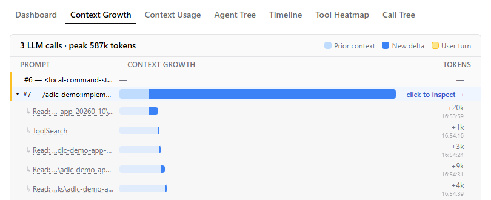
⋯ same prompt, later ⋯
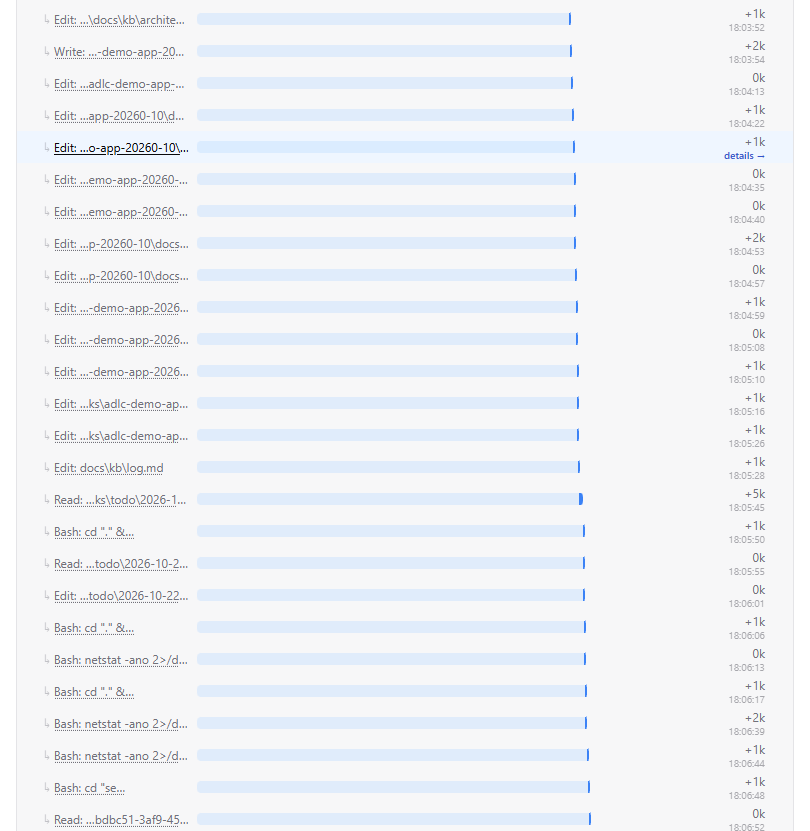
{{site:url}}
Cost · was {{ds:session.total|usd0}} a lot?
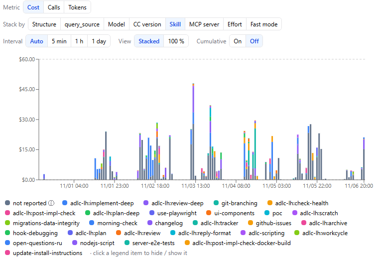
{{site:url}}
Cost · was {{ds:session.total|usd0}} a lot?
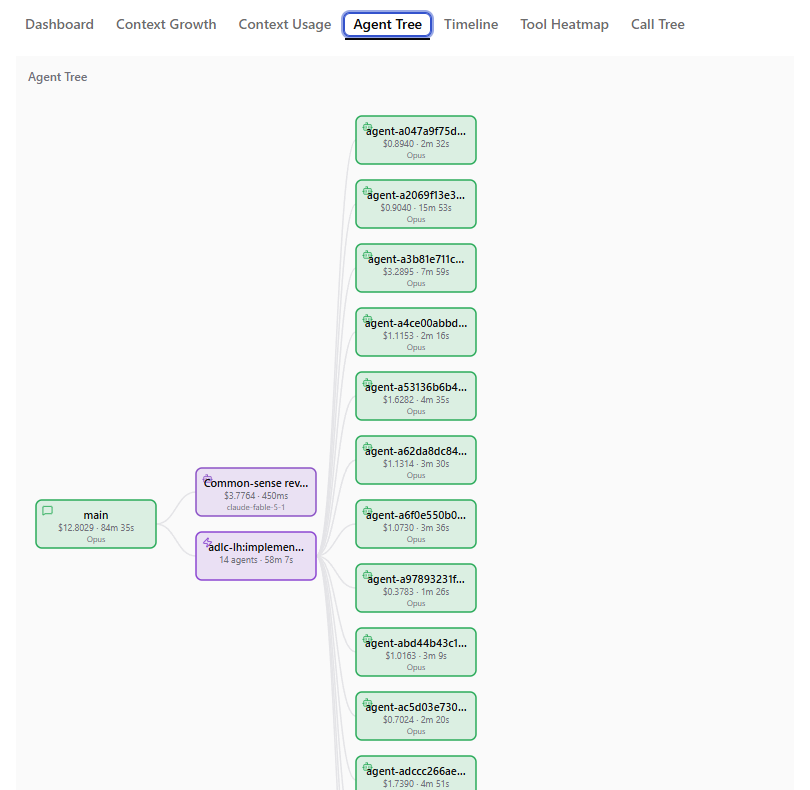
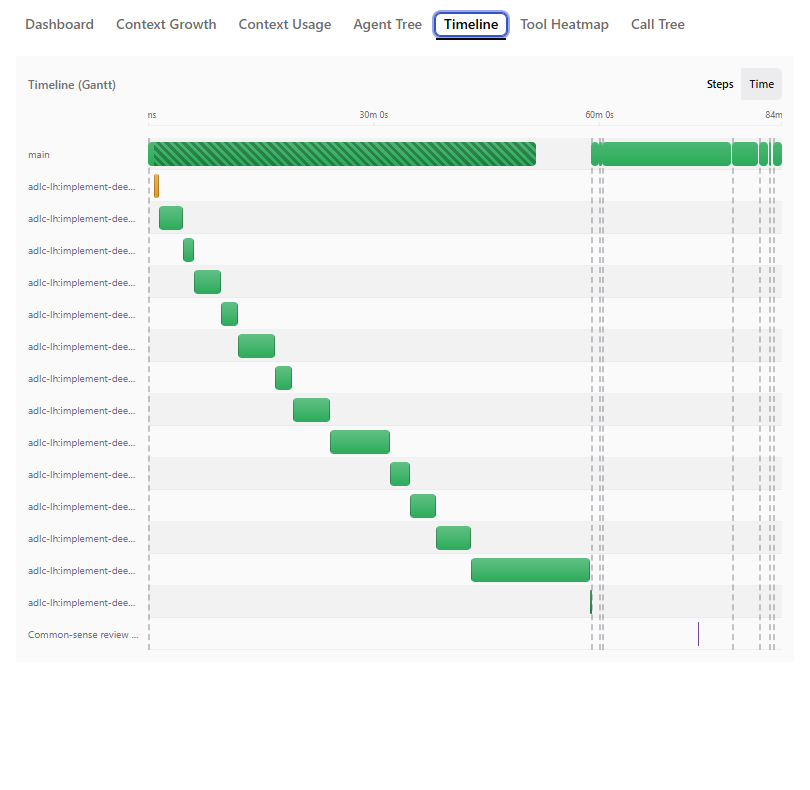
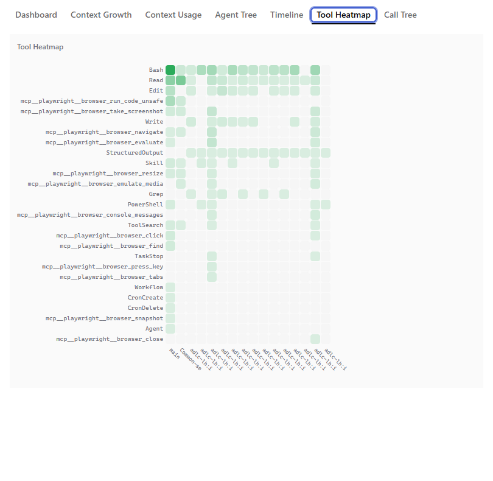
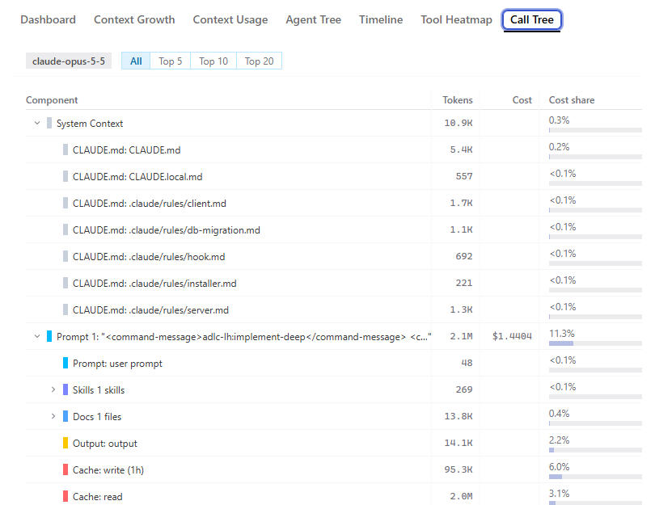
{{site:url}}
Cost · was {{ds:session.total|usd0}} a lot?
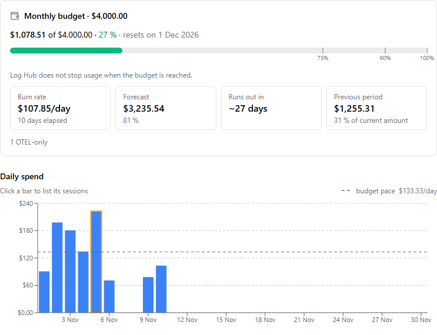
{{site:url}}
Part 2 of 8 · speed
{{site:url}}
Speed · autonomy
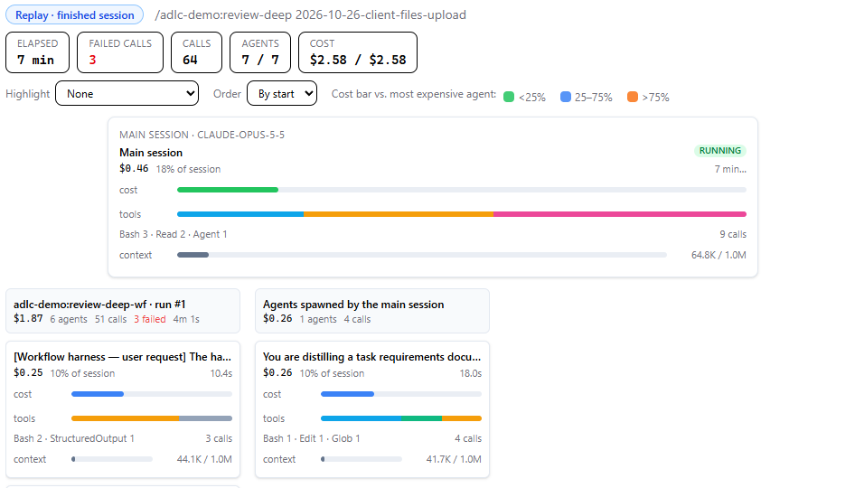
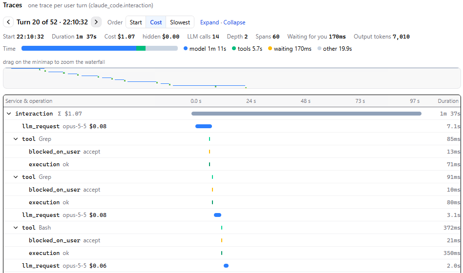
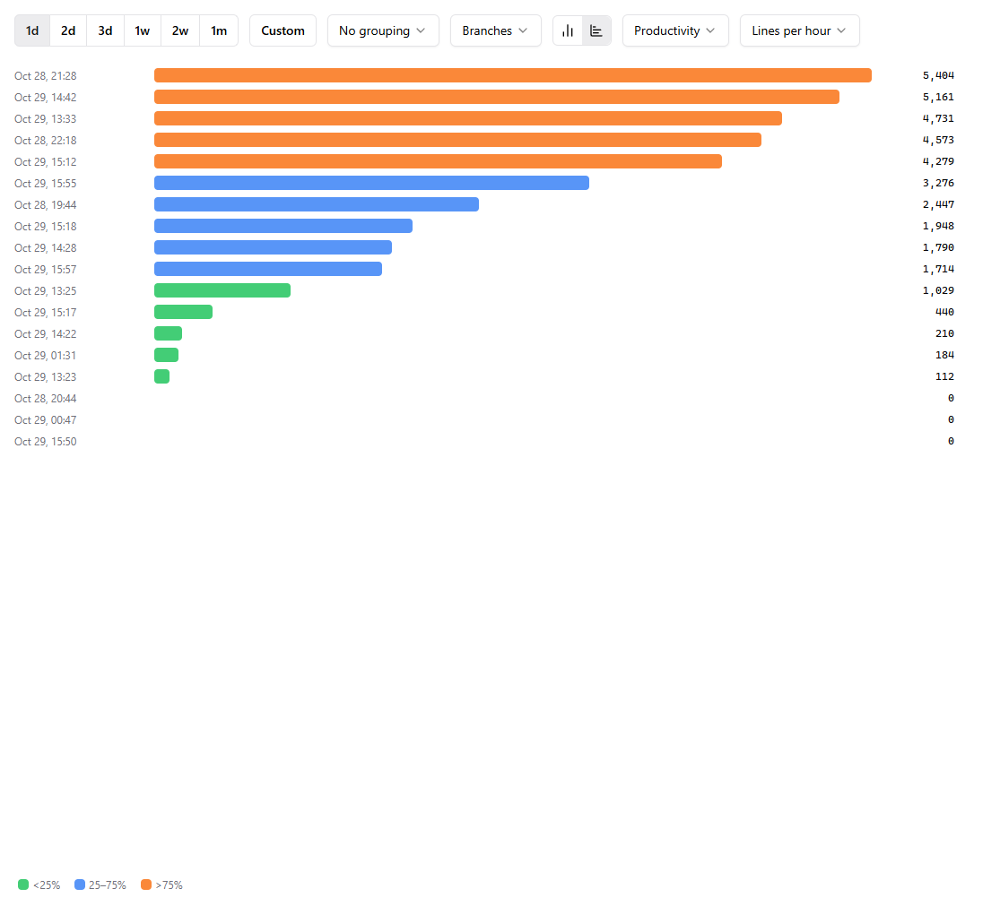
{{site:url}}
Live
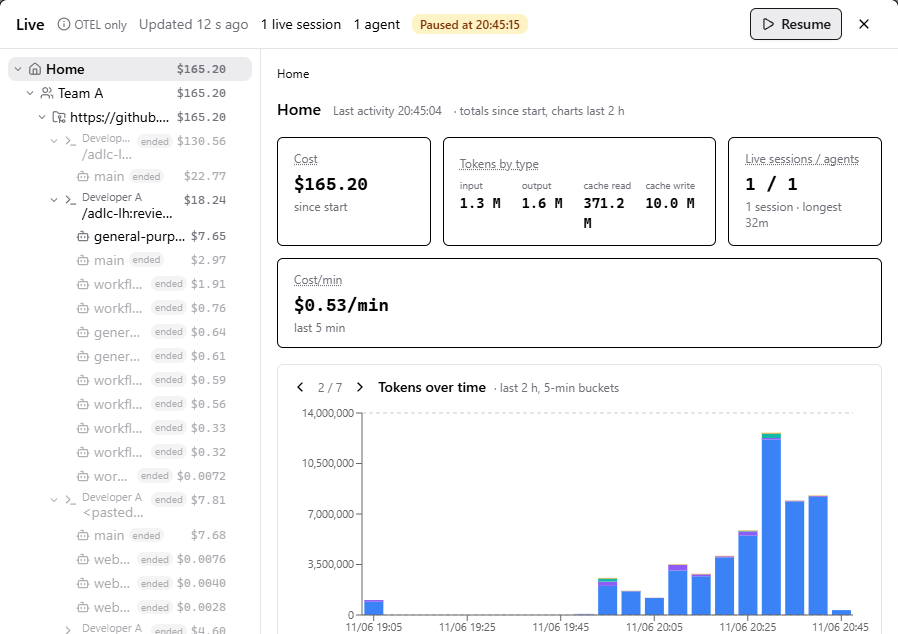
{{site:url}}
Part 3 of 8 · context
{{site:url}}
Context · what the harness loads
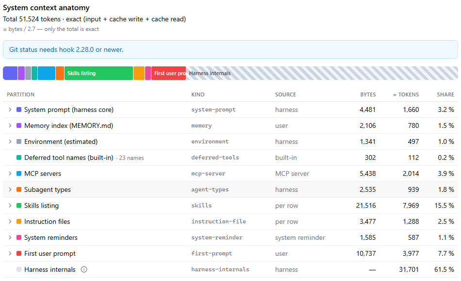
{{site:url}}
Context · what the agent uses
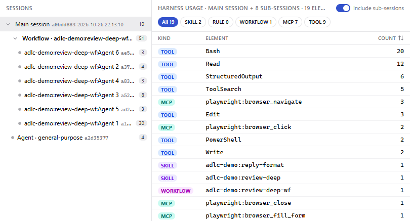
{{site:url}}
Context · knowledge base
A · verified checks
counted from tool calls: KB sessions, flood, always-read, coarse articles, dead pointers
B · heuristic signals
pointer yield, routing misses, searches after reading — check by hand
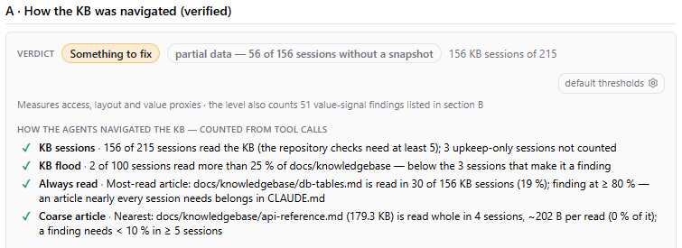
⋯ same tab, further down ⋯
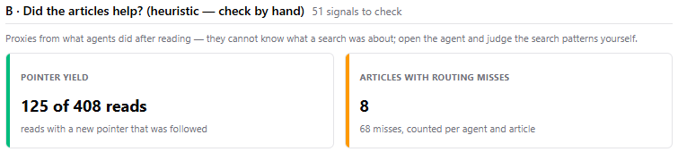
{{site:url}}
Part 4 of 8 · quality
{{site:url}}
Quality · which checks ran
| Quality check | What Log Hub shows |
|---|---|
| Skills | Harness usage · each call, ✗ if it failed |
| Knowledge base | OKF · articles read, KB value |
| Tests, linters | Tools/MCP · exit code and output |
| Commands | Logs → Bash · ✗ on an error |
| Hooks | Raw Logs · each run, exit code |
| Workflows | Workflows · status of each run |
{{site:url}}
Part 5 of 8 · team
{{site:url}}
Team · across every session
What the reports surface — value vs baseline
{{site:url}}
Team · what changed
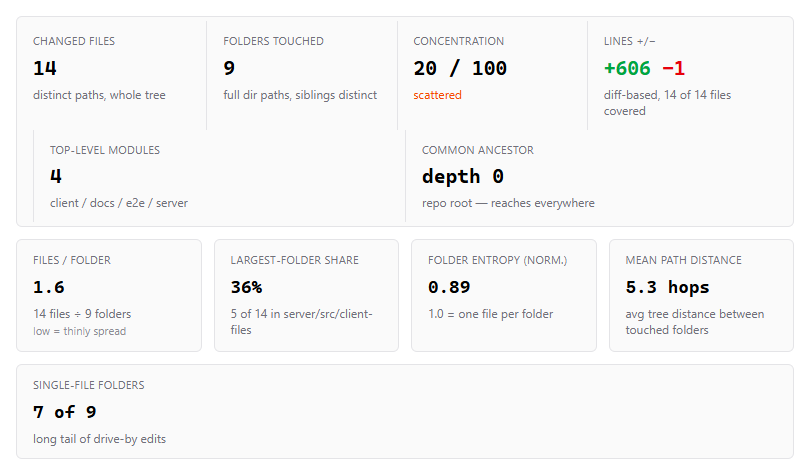
{{site:url}}
Team · across every session
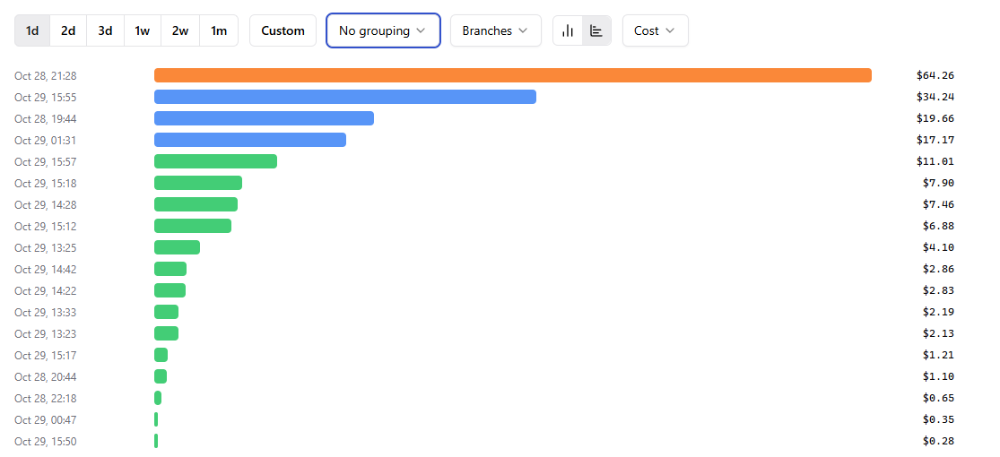
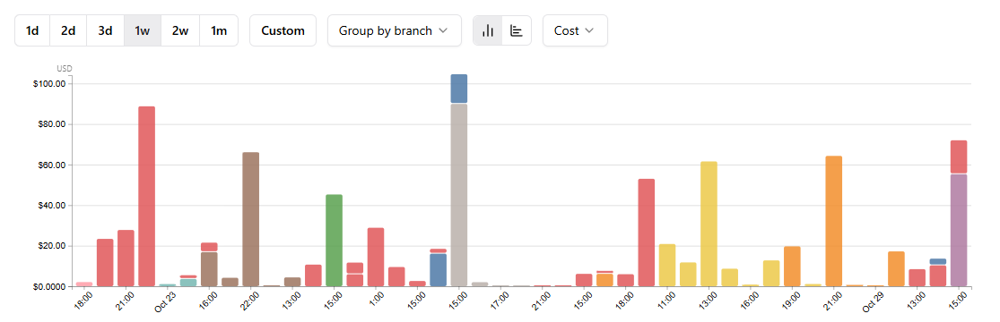
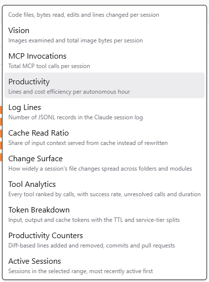
{{site:url}}
Part 6 of 8 · tools
{{site:url}}
Tools · does this tool work?
| Tool | Calls | Errors | Retried |
|---|---|---|---|
| {{ds:tools.0.name}} | {{ds:tools.0.calls}} | {{ds:tools.0.errorPct|pct}} | {{ds:tools.0.retriedPct|pct}} |
| {{ds:tools.1.name}} | {{ds:tools.1.calls}} | {{ds:tools.1.errorPct|pct}} | {{ds:tools.1.retriedPct|pct}} |
| {{ds:tools.2.name}} | {{ds:tools.2.calls}} | {{ds:tools.2.errorPct|pct}} | {{ds:tools.2.retriedPct|pct}} |
| {{ds:tools.3.name}} | {{ds:tools.3.calls}} | — | — |
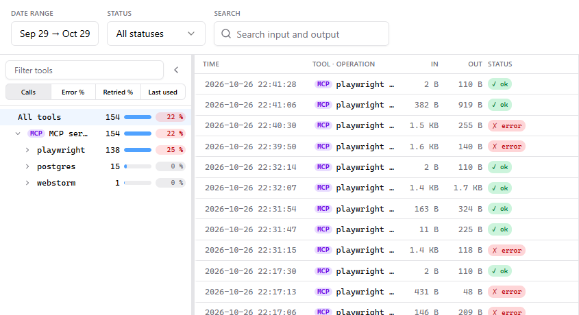
{{site:url}}
Part 7 of 8 · safety
{{site:url}}
Safety · what the agent read and sent
Traceable afterwards
{{site:url}}
Part 8 of 8 · trust
{{site:url}}
Trust · where the data lives
Data stays on your host
{{site:url}}
Trust · who reads the data
Collected · visible to · kept for
Ships with a security hardening guide, a known-limitations table and a RACI responsibility matrix. The hook only observes — it never blocks a tool call.
{{site:url}}
{{ds:session.total|usd0}} and {{ds:session.durationMin}} minutes: now you know whether that was good, and why.
Open source by DataArt · MIT · install on one of your hosts, hook one repository
{{site:url}}